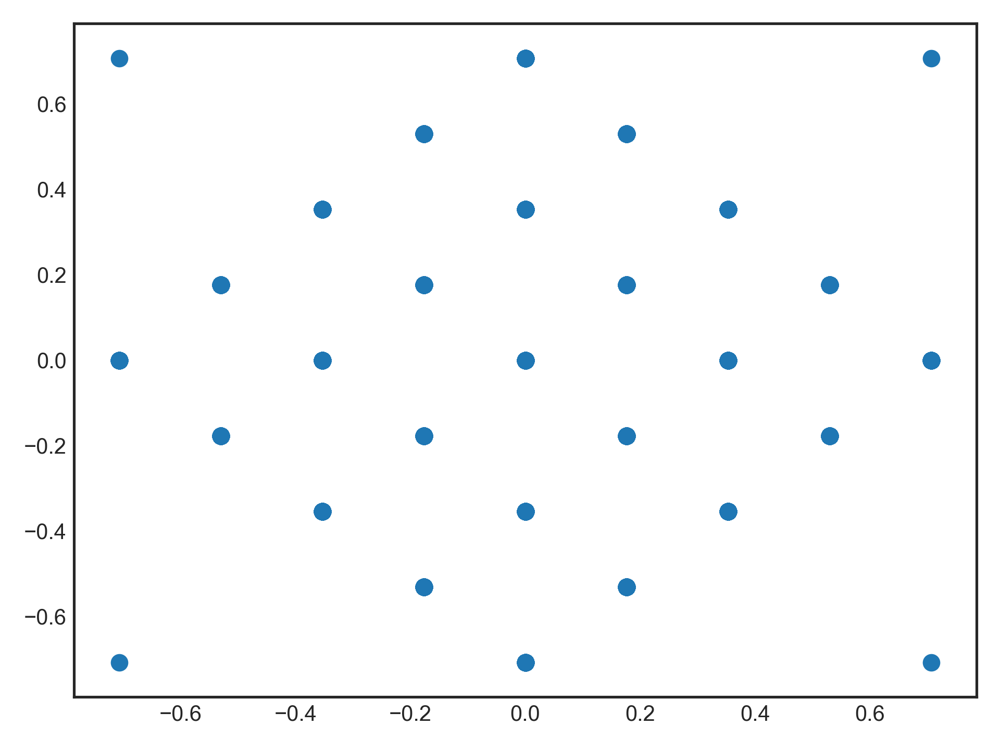

nengolib.stats.leech_kissing¶
-
nengolib.stats.leech_kissing(cache_file=None)[source]¶ Generates the 196,560 “kissing points” in 24 dimensions.
These are the points that are unit distance from the origin in the 24–dimensional Leech lattice. [1] Such points give the optimal configuration for sphere-packing in 24 dimensions. [2]
Parameters: - cache_file :
string, optional Name of file to cache/retrieve the results of this function call. Defaults to Nengo’s cache directory +
"leech_kissing.npy".
Returns: - ``(196560, 24) np.array``
The kissing points in 24 dimensions.
See also
References
[1] https://en.wikipedia.org/wiki/Leech_lattice [2] https://en.wikipedia.org/wiki/Kissing_number_problem Examples
>>> from nengolib.stats import leech_kissing >>> pts = leech_kissing()
We can visualize some of the lattice structure by projections into two dimensions. This scatter plot will look the same regardless of which two coordinates are chosen.
>>> import matplotlib.pyplot as plt >>> plt.scatter(pts[:, 0], pts[:, 1], s=50) >>> plt.show()
- cache_file :